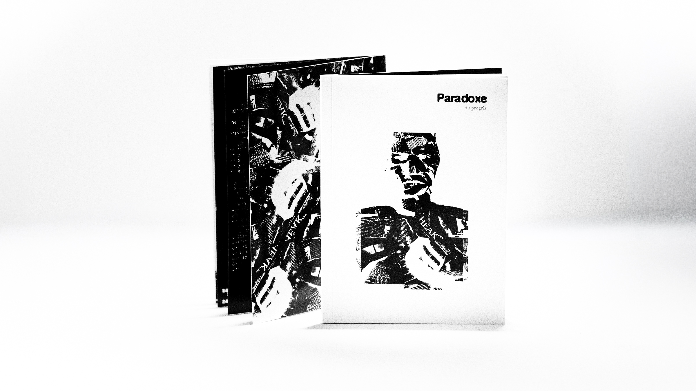
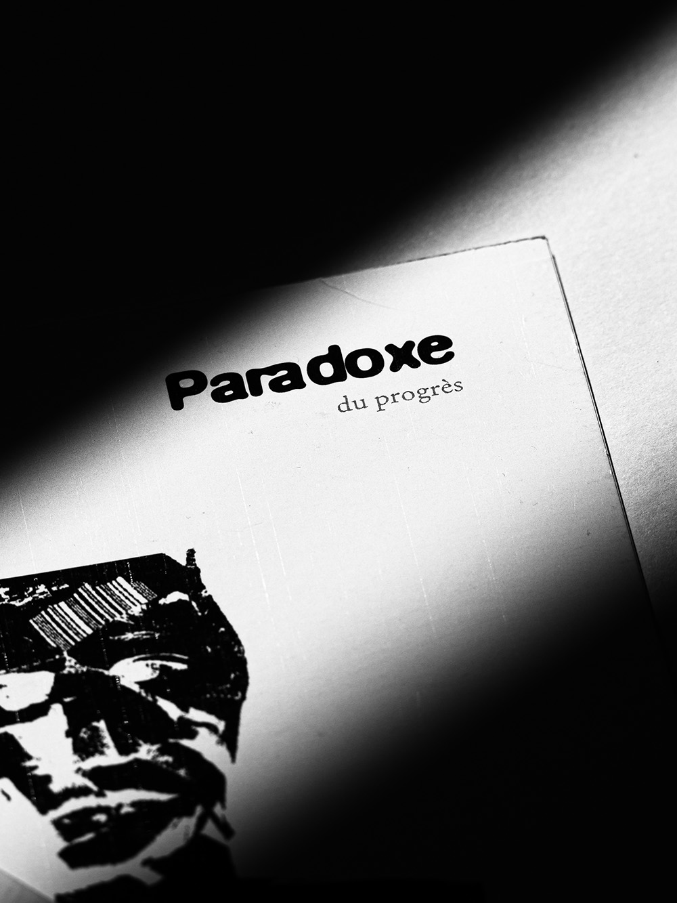
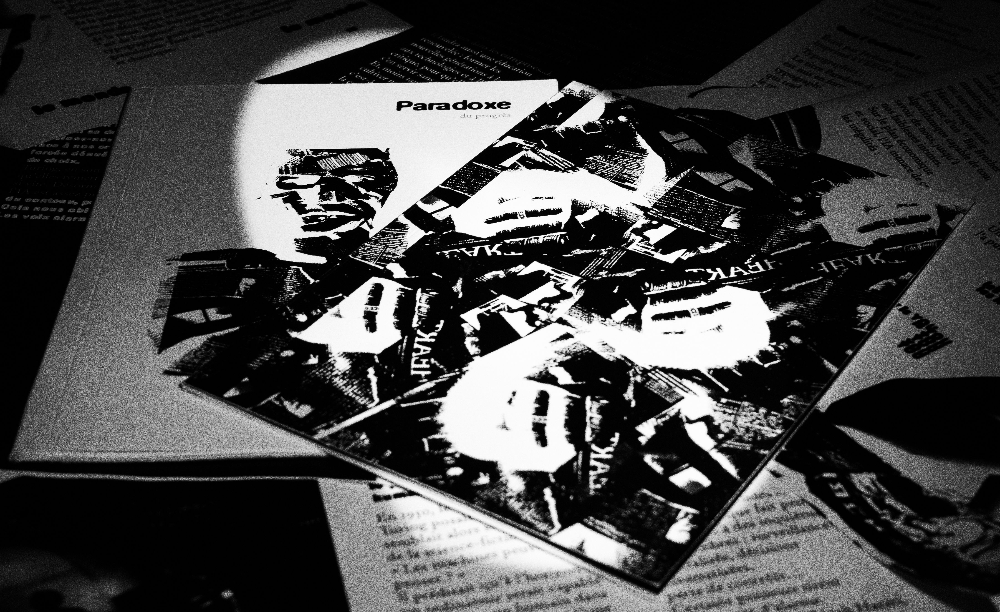
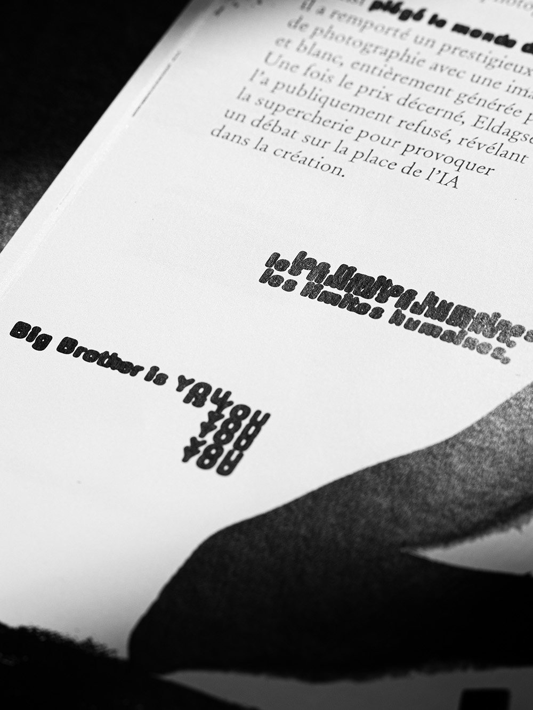
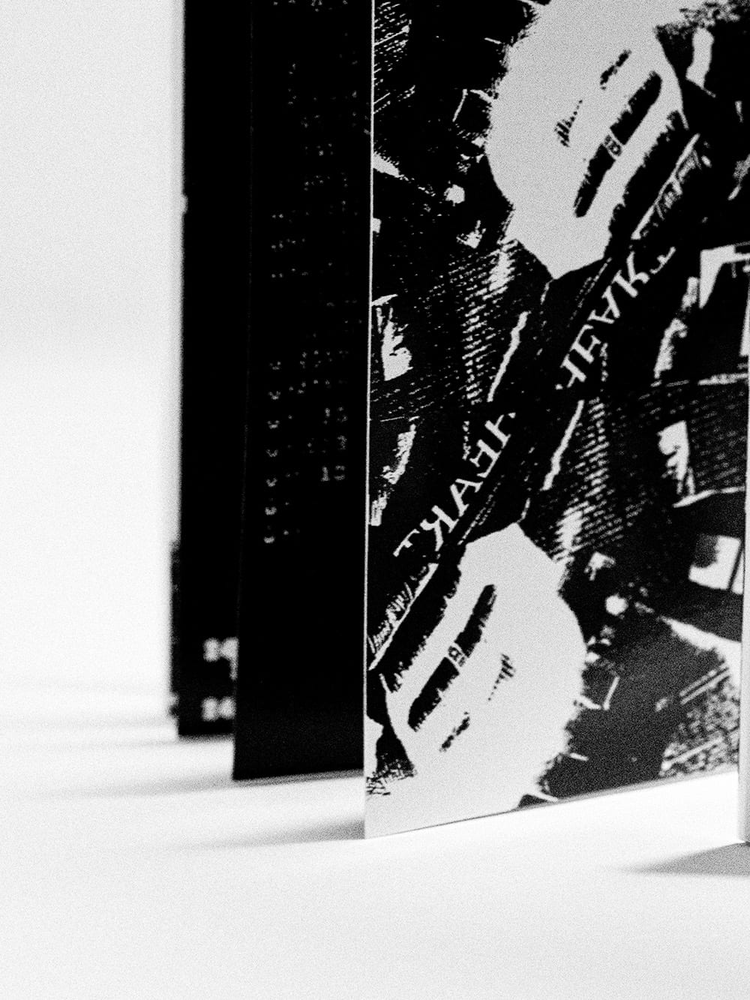
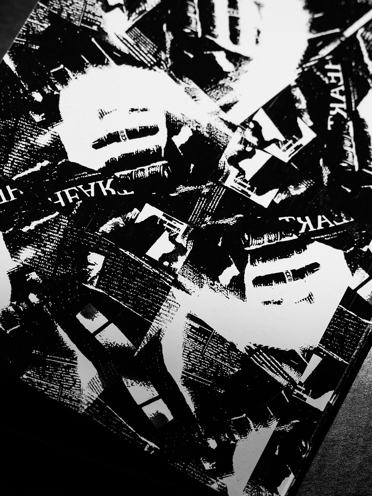
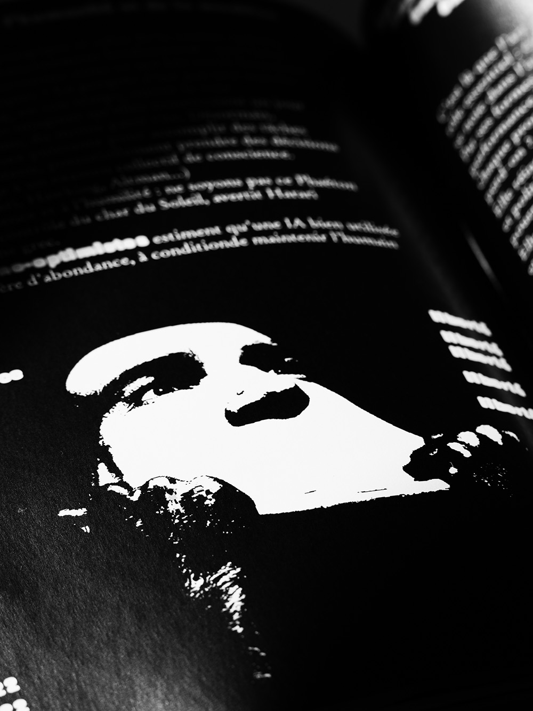

Le Paradoxe du progrès — Design éditorial
Le Paradoxe du progrès est un objet éditorial conçu intégralement, de l'écriture à la fabrication. À partir d'un sujet imposé — l'intelligence artificielle — le projet explore la tension entre fascination technologique et inquiétude, entre progrès et perte de contrôle.


Le Paradoxe du progrès est un objet éditorial conçu intégralement, de l'écriture à la fabrication. À partir d'un sujet imposé — l'intelligence artificielle — le projet explore la tension entre fascination technologique et inquiétude, entre progrès et perte de contrôle.
- Année
- 2026


Approche
Le concept naît d'un affrontement typographique. Le corps de texte, composé dans un serif classique et raisonné, est sans cesse envahi par une typographie grasse, arrondie et anxiogène qui s'immisce dans la page, dévore l'espace et déforme la lecture. Cette contamination visuelle met en scène le sujet lui-même : une raison humaine progressivement débordée par une force qu'elle a créée. L'imagerie, traitée en collage à fort contraste, hérite directement de l'esthétique brute de Dada et du punk.


"À compléter."
